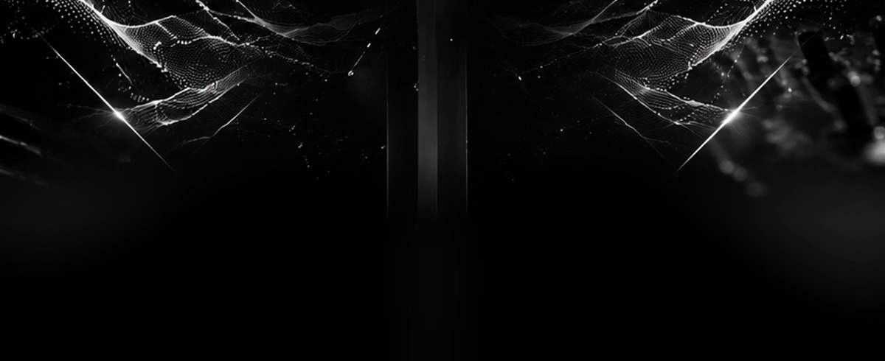
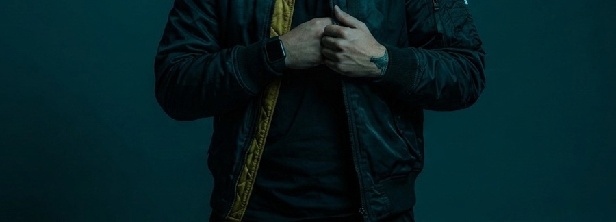

Lo que hay dentro es lo que suena.
Sesiones completas de Ableton Live: cada pista, cada dispositivo, cada línea de automatización, tal y como se construyeron. Sin limpiar, sin congelar, sin maquillar para la foto.



Pago y entrega gestionados por Gumroad. Archivos .als de Ableton Live.

Recreo temas de progressive house desde cero para entender por qué funcionan. No de oído por encima: nota por nota, cadena por cadena, hasta que el arreglo aguanta al lado del original.
De ese proceso salen dos cosas. Un vídeo cada dos semanas donde abro la sesión y enseño las tres decisiones que sostienen el tema. Y el proyecto entero, por si prefieres abrirlo tú y trastear dentro.
No son stems ni un pack de loops. Es el archivo con el que trabajo: el arreglo completo, las cadenas sin congelar y la automatización en su sitio.